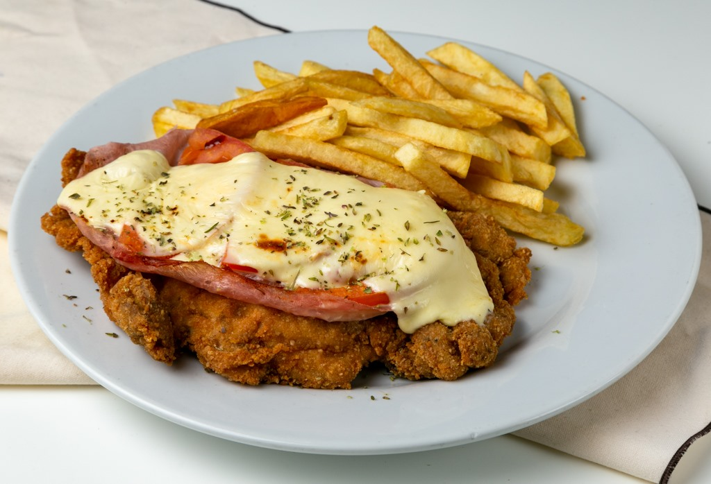

Homepage
Milanesa a la Napolitana

Description
A milanesa is a thin slice of beef, chicken, fish, veal, or sometimes pork dipped in egg and bread crumbs (or occasionally flour) with seasonings and fried.
Ingredients
- 4 eggs.
- 2 cloves of garlic.
- Parsley.
- Salt and pepper.
- Bread crumbs.
- Meat: Filleted buttock or breast.
- Jam.
- Mozzarella Cheese.
- Tomato Sauce.
Steps
- Peel the garlic cloves with parsley
- Place the eggs in a bowl and beat until they dissolve well. Then add the parsley, garlic and season with salt and pepper.
- Place the meat in the previus mixture for a few minutes.
- Pass the meat trough the bread crumbs.
- In a frying pan with plenty of hot oil, fry the Milanese. Remove and drain on absorbent paper.
- Once fried, cover the milaneasas with tomato sauce, ham and chesse. Sprinkle oregano.
- Gratin in a high oven for 5 minutes.